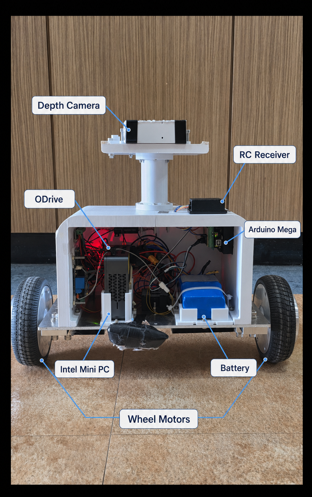
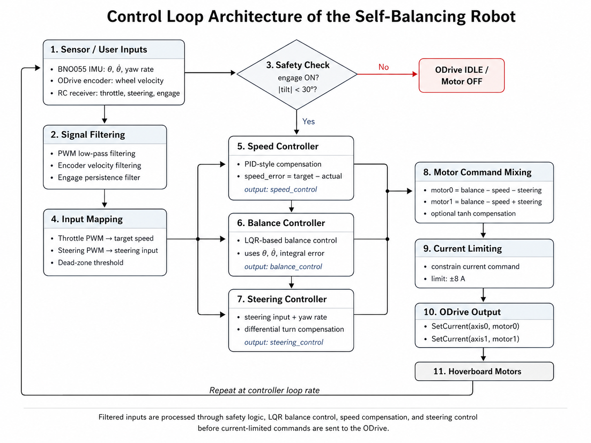

C / C++ / Python
Arduino 코드, 운영체제 실습, 시뮬레이션 자동화에 연결해 정리합니다.
Direction
밸런스 로봇, 운영체제 실습, ROS/Gazebo 시뮬레이션을 따로 흩어진 경험으로 두지 않고 센서 입력, 제어, 시스템 동작, 문서화 흐름으로 묶어 정리합니다.
Skill Stack
Arduino 코드, 운영체제 실습, 시뮬레이션 자동화에 연결해 정리합니다.
센서 입력과 모터 제어를 밸런스 로봇 프로젝트 안에서 검증합니다.
토픽, 노드, 시뮬레이션 흐름을 실제 로봇 제어와 연결하는 중입니다.
자세 제어 실험을 통해 제어 개념을 하드웨어 결과와 비교합니다.
프로세스, 스레드, 메모리, 시스템 콜을 C/Linux 실습으로 확인합니다.
Projects

진행 중
IMU 센서 입력, PID/LQR 제어, ODrive와 BLDC 모터 제어를 연결해 2륜 로봇의 자세 안정화를 실험하는 중심 프로젝트입니다.
C, Python, Linux로 프로그램 실행, 메모리, 프로세스, 스레드, 시스템 콜을 실습합니다.
Gazebo/ROS 기반 로봇 모델링, 센서 토픽, 제어 노드 실험을 정리합니다.
컨디션과 목표에 따라 훈련 루틴을 추천하는 보조 아이디어 프로젝트입니다.
Control Flow

포트폴리오의 중심은 로봇이 실제로 움직이는 흐름을 이해하는 것입니다. 센서 값을 읽고, 제어 입력을 계산하고, 구동부 응답을 관찰한 뒤 문서로 남깁니다.
Study Notes
책 1회독 내용을 Linux/C 실습으로 체감하는 방향으로 정리합니다.
PID, 상태공간, LQR을 균형 로봇 제어 실험과 연결합니다.
Arduino, 센서 입력, 모터 제어, 통신 기초를 프로젝트 단위로 기록합니다.
Languages
문법, 어휘, 표현을 꾸준히 정리하며 실제 근거가 생기면 자격과 함께 갱신합니다.
ROS, Linux, Arduino 공식 문서와 GitHub README 작성에 필요한 표현을 정리합니다.
Repository